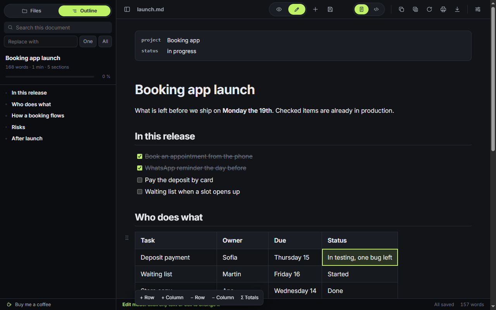
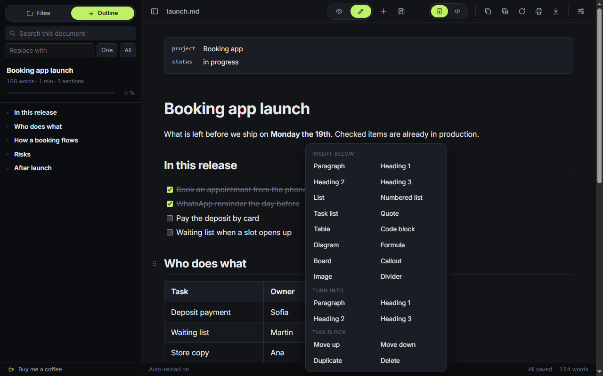
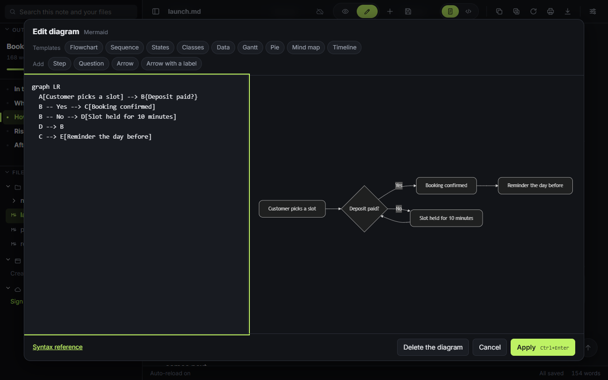
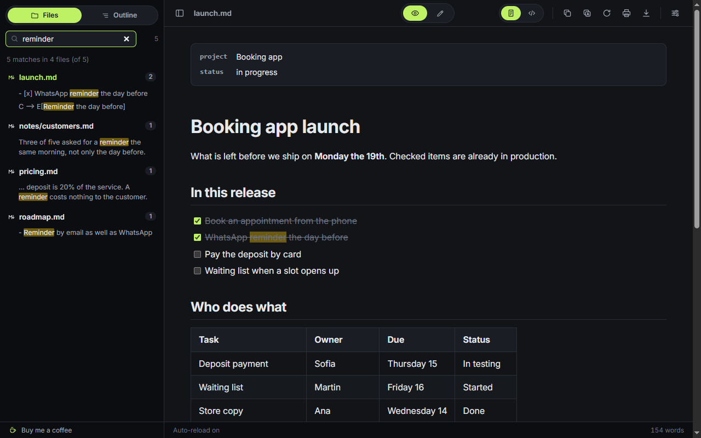

Edit the document you are reading.Editás el documento que estás leyendo.
Click a paragraph, a heading, a list item or a table cell and type. The Markdown is rewritten behind it, block by block.Hacés clic en un párrafo, un título, un ítem o una celda y escribís. El Markdown se reescribe por detrás, bloque por bloque.
Type **bold** or `code` and the marks turn into formatting. Start a line with #, - or > and it becomes a heading, a list or a quote.Escribís **negrita** o `código` y los signos se vuelven formato. Si la línea empieza con #, - o >, pasa a ser título, lista o cita.

Right-click a block.Clic derecho sobre un bloque.
Insert a table, a code block, a diagram, a formula or a callout below it. Turn it into a heading, move it, duplicate it or delete it.Insertás debajo una tabla, un bloque de código, un diagrama, una fórmula o un aviso. Lo convertís en título, lo movés, lo duplicás o lo eliminás.
Ctrl Z undoes it and Ctrl Y brings it back.Ctrl Z lo deshace y Ctrl Y lo rehace.

Diagrams with the drawing next to the code.Diagramas con el dibujo al lado del código.
Click a Mermaid or Graphviz diagram and it opens with a live preview. Nine templates to start from. A syntax error shows under the last drawing that worked.Hacés clic en un diagrama Mermaid o Graphviz y se abre con la vista previa en vivo. Hay nueve plantillas para arrancar. Un error de sintaxis aparece debajo del último dibujo que salió bien.

The whole folder, searchable.La carpeta entera, con búsqueda.
The sidebar lists the files next to the one you opened and searches the text of all of them at once. Create, rename and delete files from there.La barra lateral muestra los archivos que están al lado del que abriste y busca en el texto de todos a la vez. Desde ahí creás, renombrás y eliminás archivos.
[[name]] links open the file with that name.Los links [[nombre]] abren el archivo con ese nombre.

Also in thereTambién trae
assets/ next to the document.Se guardan en assets/, al lado del documento.Two ways to use itDos formas de usarla
On the webEn la web
Nothing to install. Chrome, Edge and Brave open folders and save in place. Firefox and Safari open one file at a time and saving downloads a copy.Nada que instalar. Chrome, Edge y Brave abren carpetas y guardan en el lugar. Firefox y Safari abren de a un archivo y al guardar descargan una copia.
Open in the browserAbrir en el navegadorAs an extensionComo extensión
Set Chrome as the default app for .md files and a double-click opens them rendered. It also renders Markdown served by a website.Ponés Chrome como programa por defecto para los .md y con doble clic se abren ya formateados. También formatea el Markdown que sirve un sitio web.
Your files are read in your browser.Tus archivos se leen en tu navegador.
There is no server behind this page, no account and no analytics. Privacy has the detail, and the code is on GitHub under the MIT license.Detrás de esta página no hay servidor, cuenta ni analítica. El detalle está en Privacidad, y el código en GitHub con licencia MIT.